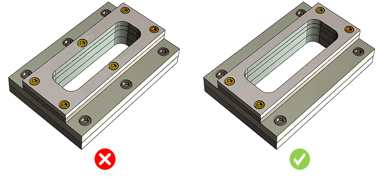

部品あたりのボルト締結数は、ユーザーが指定した値に従う必要があります。
多くの組織では、異なるバージョンやシリーズを持つ類似製品を、部品の修正または置き換えによって製造しています。これは、市場の需要に応じて異なる機能を異なるコストで提供するために実施されています。
締結具の数が多すぎると、組立作業に過剰な時間がかかり、穴あけやタップ加工に多大なコストが発生します。また、ボルト選定のばらつきによって潜在的なミスの可能性が増加し、品質問題の増加にもつながります。
DFMProはアセンブリ内のボルトを識別します。部品あたりのボルト締結数を検証し、その値をルールマネージャーで設定された構成値と照合します。

注記:
このルールは、DFMPro 設定に基づき、トップレベルのアセンブリ パーツで実行できます。
トップレベルまたは全レベルでの識別については、本ルールでは個別ルールの構成がDFMPro 設定よりも優先されます。詳細については、DFMPro 設定セクションを確認してください。
このルールを実行するには、ハードウェア データベースの「ハードウェア名」および「ハードウェア種別」フィールドの入力が必須です。
本ルールは、ハードウェア種別として「Bolt」および「Screw」のみをサポートします。
ユーザーは、コンポーネント名を構成する際にワイルドカード文字を使用できます:
*dia*（コンポーネント名に dia または DIA を含む）
*_dia（名前が _dia または DIA で終わる）
dia*（名前が dia または DIA で始まる）